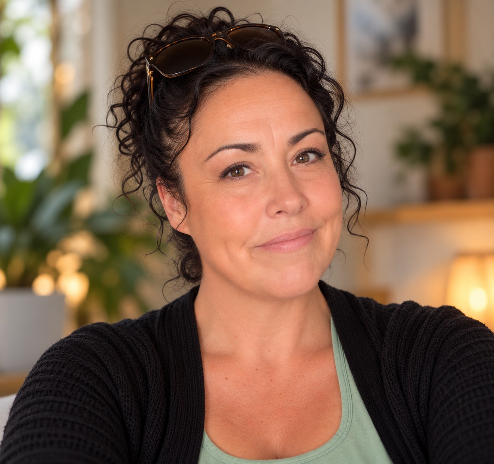

About Me
I'm Janine Conway.
I'm a person-centred counsellor and founder of Let Me Help.

For over 20 years, I have worked with people through employability, mentoring, coaching and personal and social development. Throughout that time, my work has centred around helping people navigate challenges, recognise their strengths and find ways to move forward in their lives.
A significant part of my work has involved supporting young people and young adults. I often found that what someone appeared to need help with on the surface wasn't always the whole story. Mental health difficulties, grief and loss, learning difficulties, difficult life experiences, behaviour, relationships and low self-worth could all be part of what was happening underneath.
That experience was one of the main reasons I chose to train as a counsellor. I wanted to be better equipped to understand and support people when practical advice, mentoring or encouragement alone wasn't enough.
My counselling experience
Person-centred and trauma-focused
My counselling experience includes working with young adults and supporting clients through Manchester Mind, where I have worked with people experiencing a wide range of emotional and psychological difficulties.
I am a person-centred counsellor and practise in a trauma-focused way.
Through my training and counselling work with Manchester Mind, I have developed an understanding of trauma and the lasting impact it can have on people's lives. I continue to build on this knowledge through professional development, reading and learning.
I recognise that our experiences, whether recent or from much earlier in life, can influence how we feel about ourselves, our relationships and the world around us. For some people, the effects of trauma can remain long after the experience itself has ended.
My focus is on understanding you as a person and what life feels like for you in the here and now. I offer a space where you can explore your thoughts, feelings and experiences without judgement, at a pace and in a direction that feels right for you.
More than professional experience
The experience I bring to counselling
Before training as a counsellor, I spent over 20 years working with people from a wide range of backgrounds, supporting them through personal challenges, difficult circumstances and periods of change.
Much of my work has involved supporting young people and adults experiencing disadvantage, mental health difficulties, disabilities and barriers to moving forward in their lives.
I also have a particular understanding of the challenges associated with visual impairment, blindness, life-changing illness and living with disability. These experiences can bring significant changes to a person's independence, identity, relationships and everyday life. Adjusting to changes in health or physical ability can also involve feelings of grief, loss, uncertainty and a need to rediscover a sense of self.
My professional background includes working with people affected by offending and the criminal justice system, including four years with Nacro, a crime reduction charity.
Throughout my career, I've come to recognise that people's circumstances, behaviours and the difficulties they face don't tell the whole story. There is so much more to a person than what others may see or understand.
These experiences have strengthened my belief in the importance of listening without judgement, looking beyond labels and recognising each person as an individual.
As a counsellor, I bring this understanding alongside my professional training, offering a space where you can explore whatever matters to you, without pressure, judgement or expectations.
Thinking about counselling?
If you'd like to find out more about how I work, you can read about my approach or get in touch.
My Approach Get in touch